Forelimb Homology 3D Models
A collection of skeletal forelimb models from the vertebrate tree of life. These models were created using CT scans and laser scans generated for the oVert project and from various peer-reviewed studies.
3D models are available to view on Sketchfab, and editable mesh files are available for download from MorphoSource.
Key to forelimb element ontology on Uberon, and colors with hex codes:
| Element | Uberon ID | Color | Hex code |
|---|---|---|---|
| Humerus | UBERON:0000976 | Electric blue | #3157FF |
| Radius | UBERON:0001423 | Light green | #D0F18D |
| Ulna | UBERON:0001424 | Powder blue | #84B1C8 |
| Radioulna | UBERON:0006715 | Green | #67BE91 |
| Carpals | UBERON:0001435 | Maroon | #CD4D79 |
| Carpometacarpus | UBERON:0011205 | Yellow | #E9E963 |
| Phalanges | UBERON:0003221 | Pink | #FFAAC9 |
| Intermedium | UBERON:0001428 | Gray | #9A9A9A |
| Ulnare | UBERON:0002445 | Yellow | #E9E963 |
| Radials | UBERON:2101586 | Maroon | #CD4D79 |
| Mesomere (fin) | UBERON:4200160 | Pink | #FFAAC9 |
| Fin rays | UBERON:4500007 | Purple | #A96CC9 |
Individual forelimb models
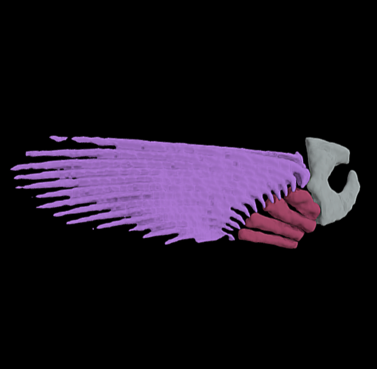
Rainbow trout
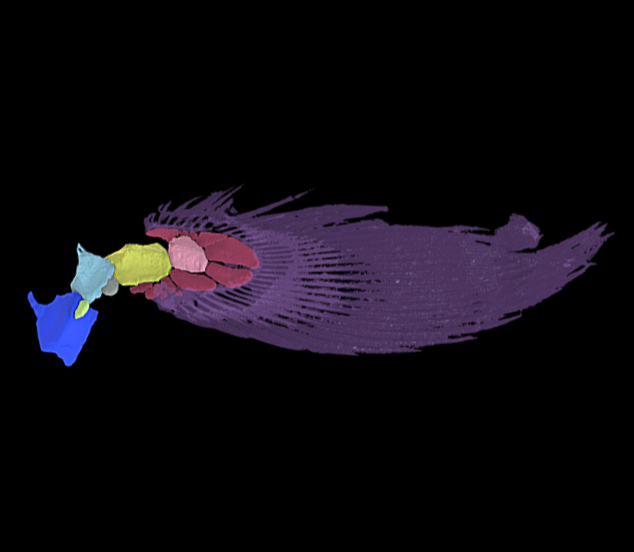
Coelacanth
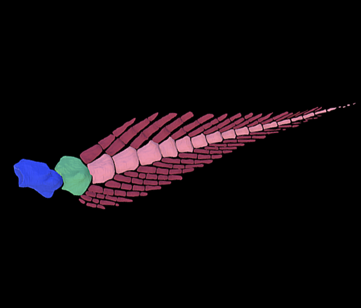
Australian lungfish
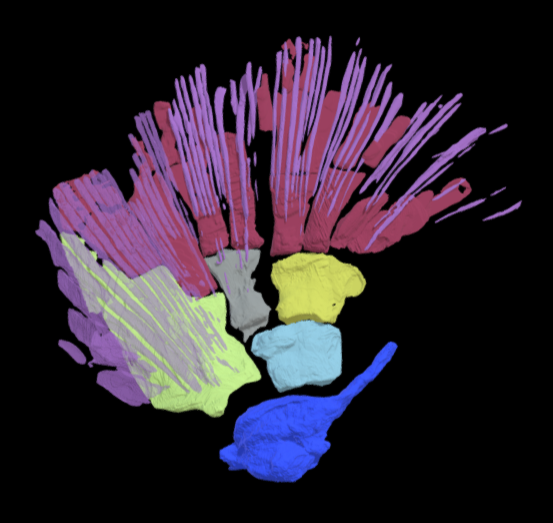
Sauripterus
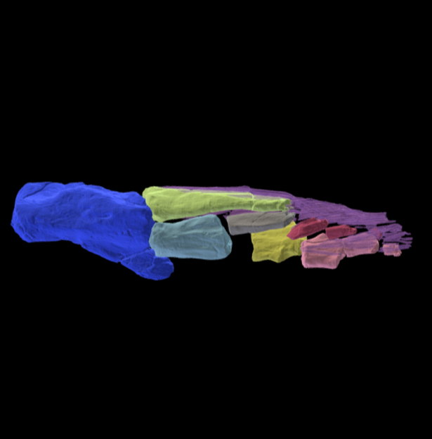
Tiktaalik
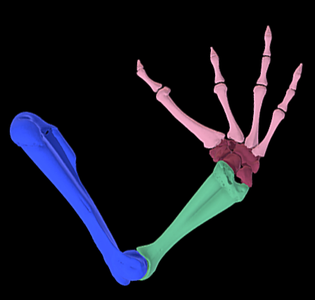
Hairy frog
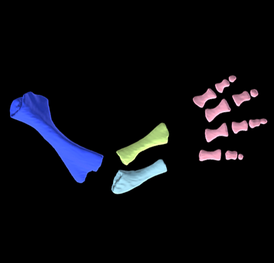
Giant salamander
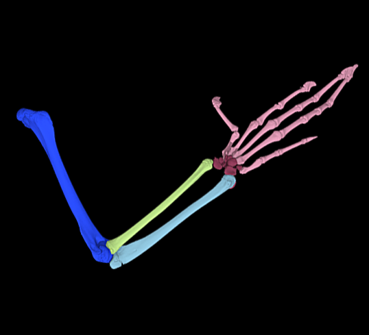
Emerald tree monitor
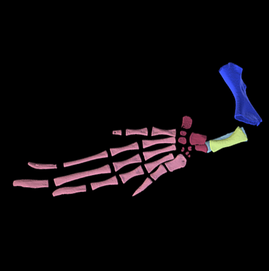
Green sea turtle
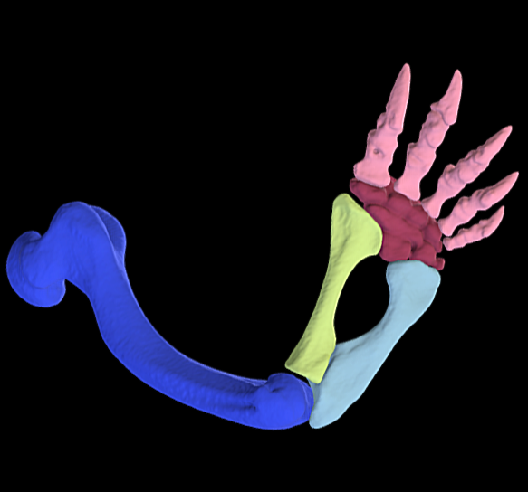
Eastern box turtle
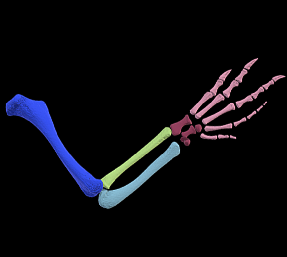
American alligator
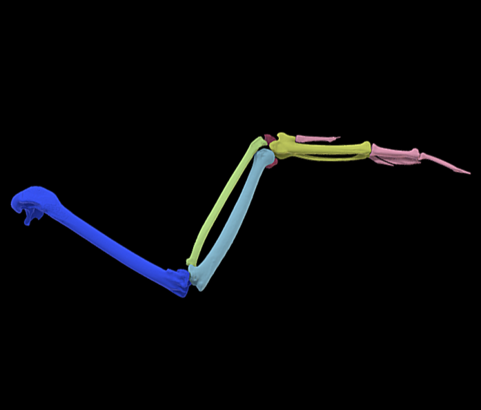
Atlantic puffin
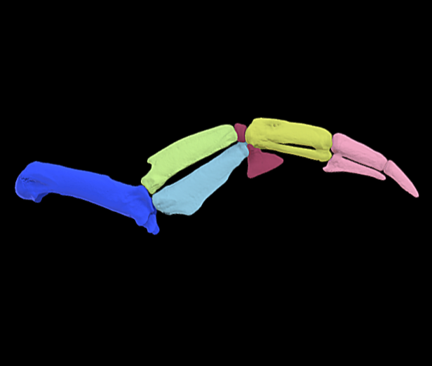
Galapagos penguin
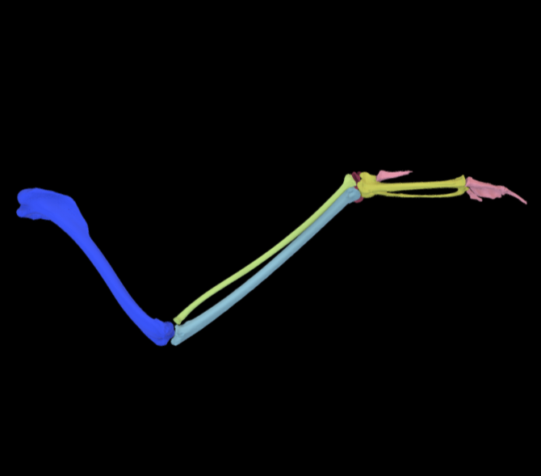
Bald eagle
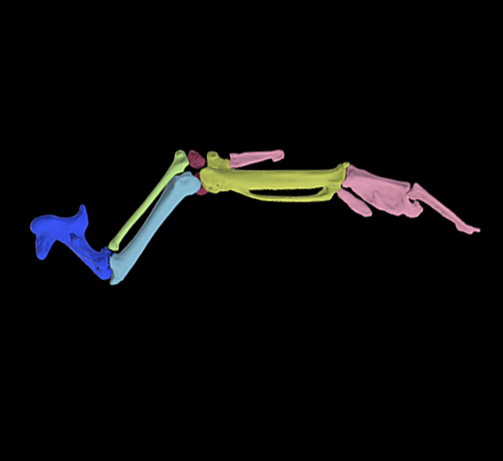
White throated swift
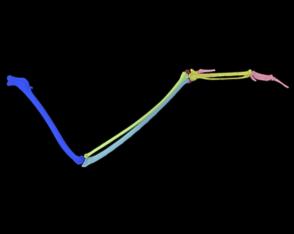
Snowy egret
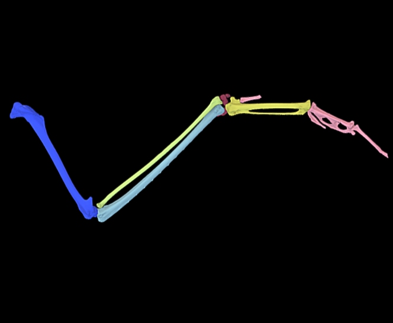
Black skimmer
Common gull
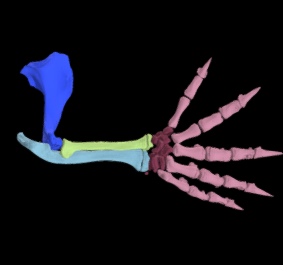
Platypus
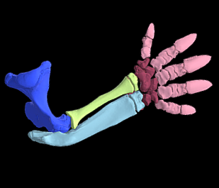
Echidna
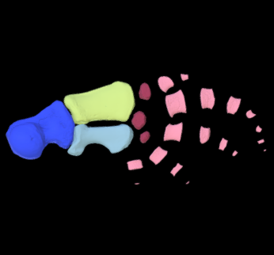
Orca
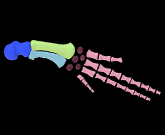
Humpback whale
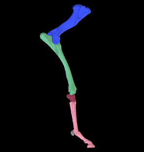
Poitou donkey
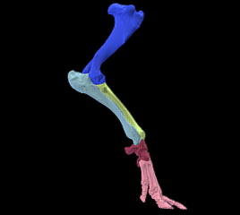
Tapir
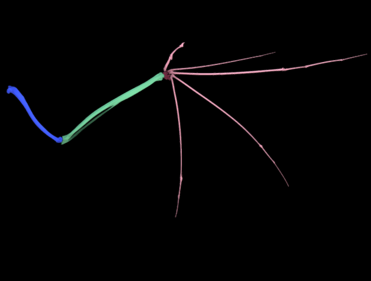
Vampire bat
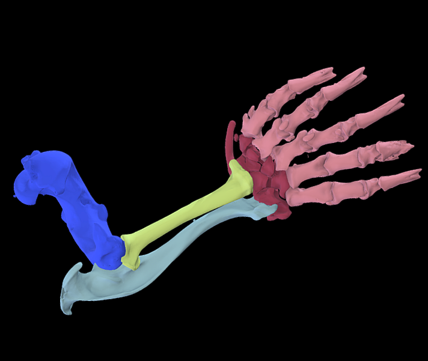
Star nosed mole
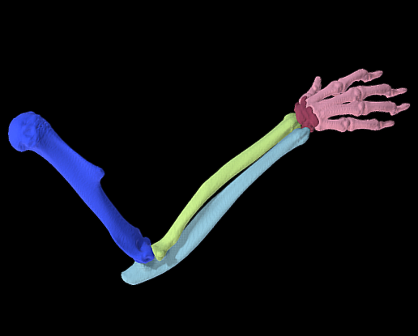
Gray tree rat
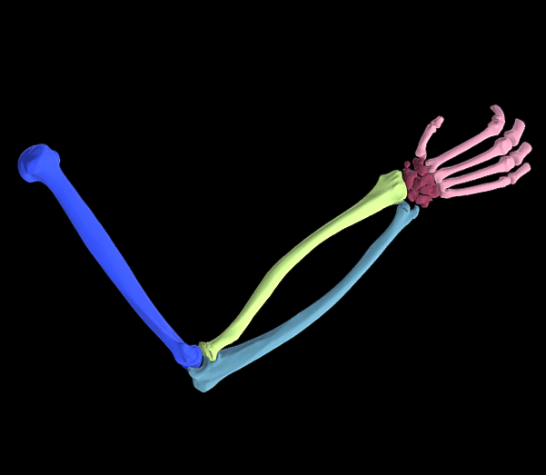
Chimpanzee
Peer-reviewed sources
Tiktaalik, Sauripterus, and Australian lungfish
Stewart, TA, Lemberg, JB, Taft, NK, Yoo, I, Daeschler, EB, and Shubin, NH.
"Fin ray patterns at the fin-to-limb transition."
Proceedings of the National Academy of Sciences 117, no. 3 (2020): 1612-1620.
Coelacanth
Mansuit, R, Clément, G, Herrel, A, Dutel, H, Tafforeau, P, Santin, MD, and Herbin, M.
"Development and growth of the pectoral girdle and fin skeleton in the extant coelacanth Latimeria chalumnae."
Journal of Anatomy 236, no. 3 (2020): 493-509.
Tapir
Maclaren, JA and Nauwelaerts, S.
"A three-dimensional morphometric analysis of upper forelimb morphology in the enigmatic tapir (Perissodactyla: Tapirus) hints at subtle variations in locomotor ecology"
Journal of Morphology 277 (2016):1469-1485
Donkey
MacLaren, JA.
"Biogeography a key influence on distal forelimb variation in horses through the Cenozoic"
Proceedings of The Royal Society B 288:20202465.
Funding
The oVert Thematic Collections Network: NSF DBI-1701714
The Non-Clinical Tomography Users Research Network (NoCTURN): NSF Award ID 2226184
Software used to create models
Segmentation: Avizo and VG Studio Max
Mesh editing: Meshlab and Blender